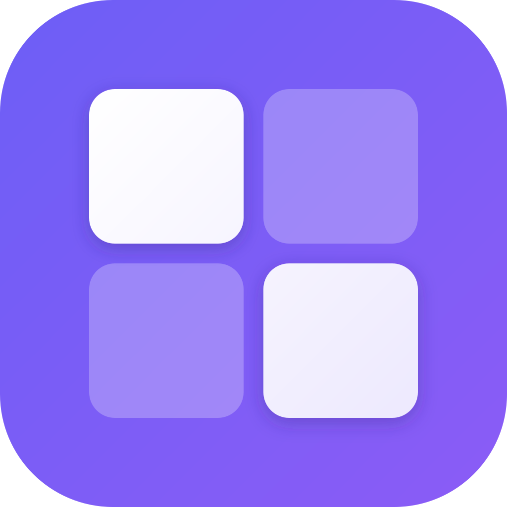

Tesseratmux/Zellij workflows — tabs, splits, panes, a command palette, and modal keys — for arbitrary macOS apps, by puppeting their windows through the Accessibility API.
A single command sets up the tap and the background agent.
$ brew tap pa/tessera https://github.com/pa/tessera $ brew install --HEAD tessera $ brew services start tessera
Then grant System Settings → Privacy & Security → Accessibility → Tessera, and keep Stage Manager off.
Tessera is a menu-bar agent (look for the ▚ pill — it shows your tab position and active mode). It never takes over your Mac; it just arranges windows when you ask.
AXEnhancedUserInterface so Chromium/Electron apps actually tile.Everything is rebindable in Settings (⌘, or the menu bar).
| Shortcut | Action |
|---|---|
| ⌃⌥⌘R / ⌃⌥⌘D | Split focused window right / down |
| ⌃⌥⌘H / ⌃⌥⌘J / ⌃⌥⌘K / ⌃⌥⌘L | Focus left / down / up / right |
| ⌃⌥⇧⌘H / ⌃⌥⇧⌘J / ⌃⌥⇧⌘K / ⌃⌥⇧⌘L | Move window between panes |
| ⌃⌥⌘T / ⌃⌥⌘] / ⌃⌥⌘[ | New tab · next / previous tab |
| ⌃⌥⇧⌘P | Command palette |
| ⌃⌥⇧⌘W | Workspace navigator |
| ⌃⌥⌘⌫ | Reset tiling (un-manage everything) |
| Key | Action |
|---|---|
| r / d | Split right / down |
| h j k l | Focus pane (or move a floating window) |
| ⇧ + hjkl | Swap window with neighbour |
| n / p | Cycle focus through all windows |
| f | Full-screen (zoom) the pane |
| w | Attach / float / re-tile the focused window |
| s | Toggle stacked (monocle) layout |
| c | Change the pane's window (palette) |
| Key | Action |
|---|---|
| n | New tab |
| h / l | Previous / next tab |
| ⇧h / ⇧l | Move window to previous / next tab |
| m … ⏎ | Move window to tab # (a number past the end creates it) |
| Key | Action |
|---|---|
| h / l | Narrower / wider |
| k / j | Taller / shorter |
In any mode the menu-bar hint bar shows only the keys that apply right now. ⏎ / esc exits a mode.
After granting Accessibility, Tessera lays your open windows out as one tab per app (a multi-window app's windows are stacked so you cycle them with n/p in Pane mode). Re-run anytime from the menu bar → Organize Windows by App.
Open Settings (⌘, when Tessera is active, or the menu-bar ▚ menu) → Hotkeys. Click any shortcut and press a new chord to rebind it; Reset to Defaults restores the built-in set. Changes apply immediately.
In Settings → General, drag Tile padding — a percentage of screen width applied to the outer margin and the gaps between panes, live.